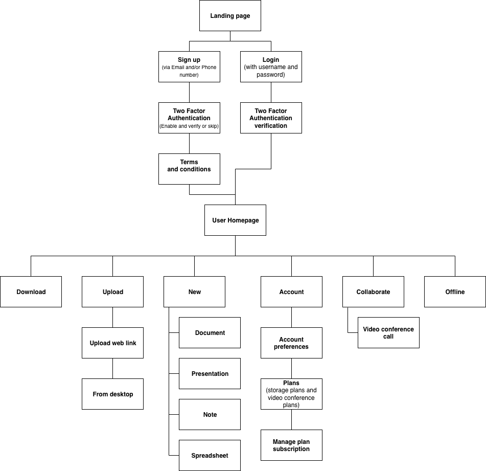
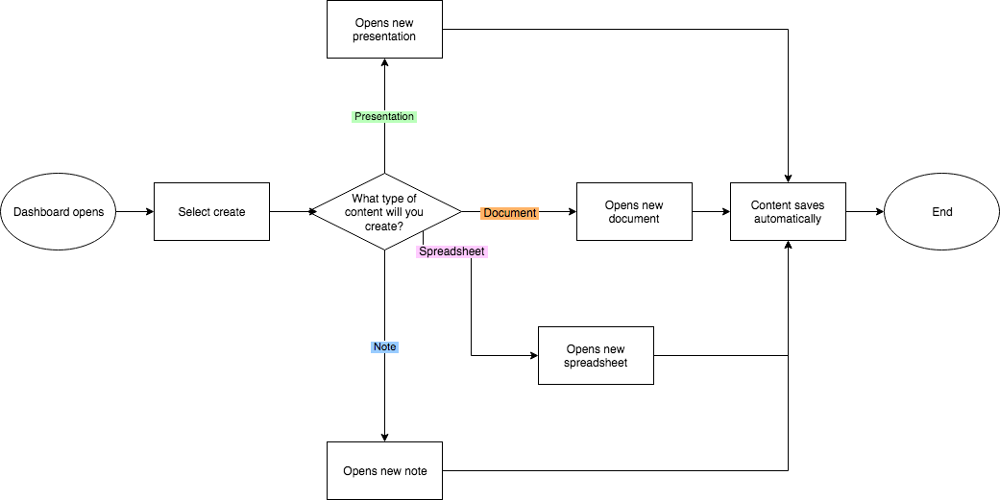
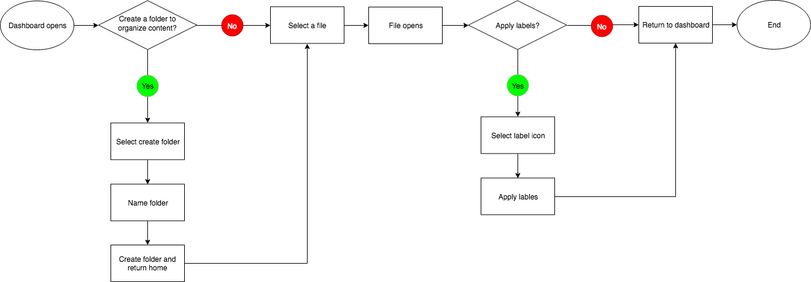
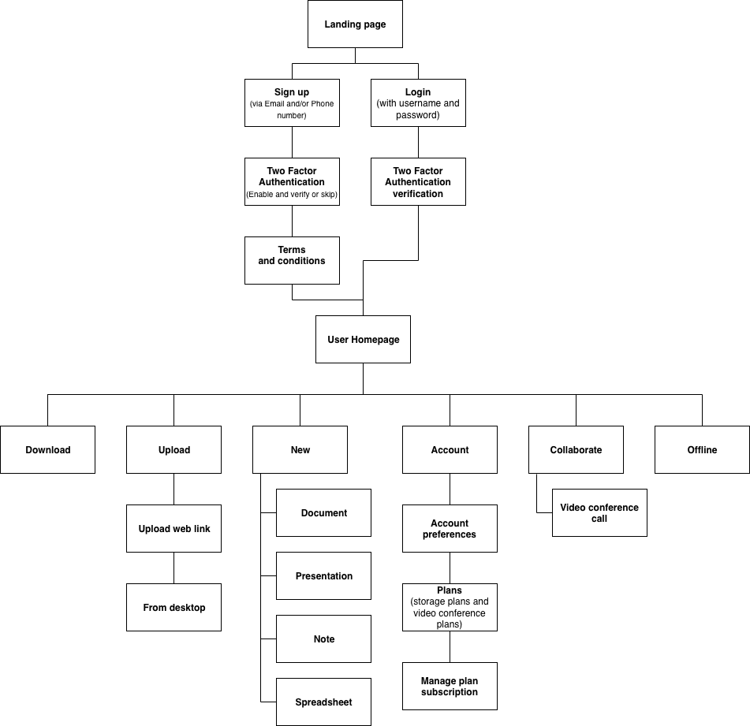
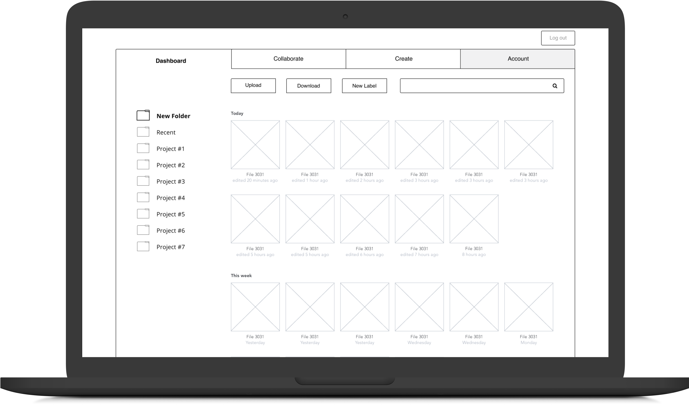
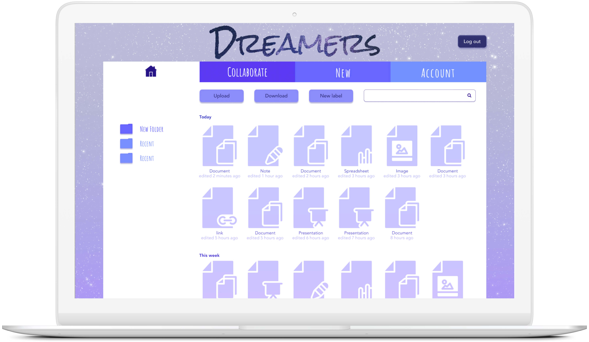
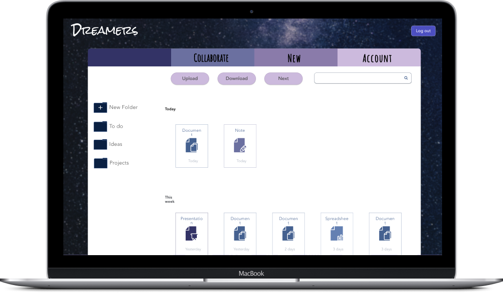
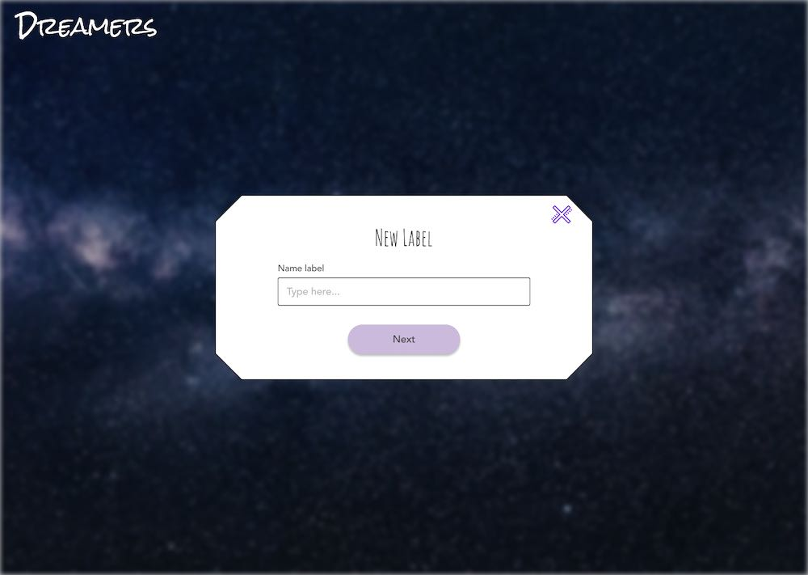
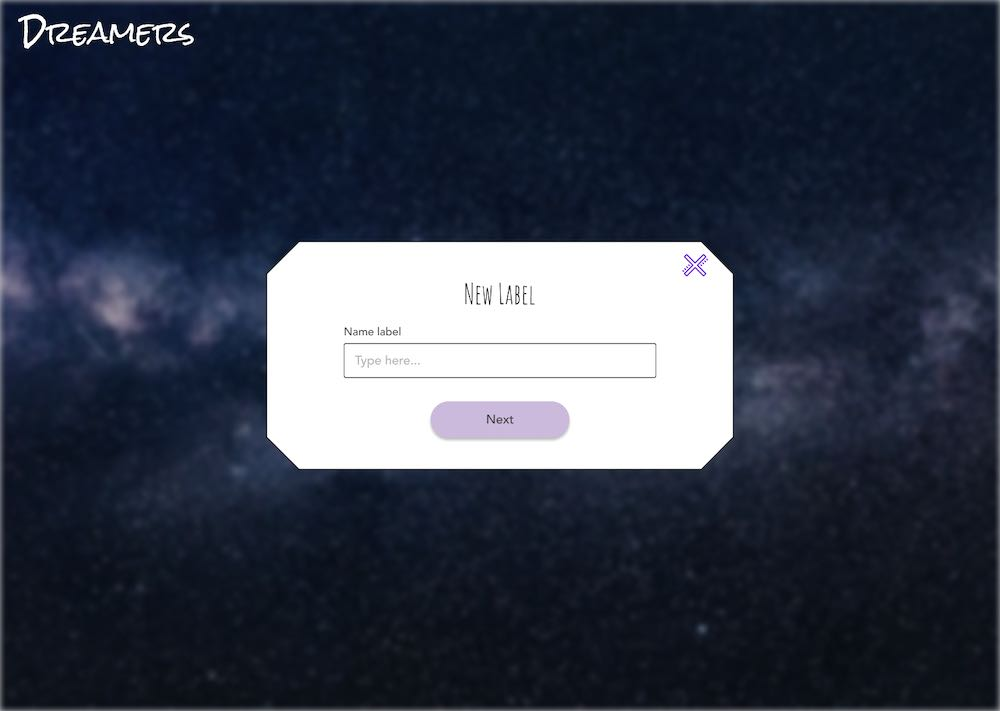
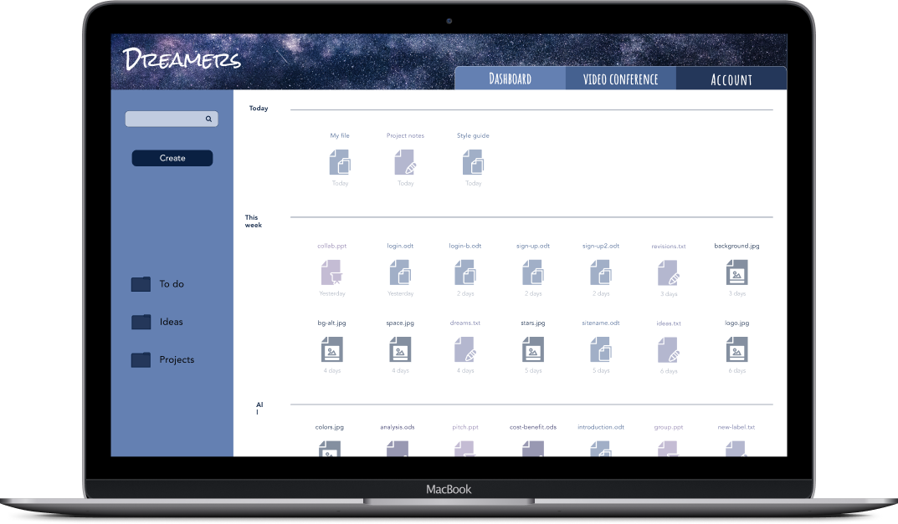

Content Strategy
I then used all the information I collected to create a content strategy map to visualize individual page heierarchy within the site.
There are many well-known cloud storage sites in use today but they are all designed for one set of tasks or user group and many are hard to use and lack a solid organizational users. So I was tasked to create a cloud storage site that would be intuitive to use as well as aesthetically pleasing and unique.
My client came to me with a lot of excitement for the possibilities in the cloud storage industry market. They believed that the market is still young and that the right competitor, with the right features, could dominate the market.
My client also requested these features be included
They also said that they felt collaboration would an important aspect of the site to leverage growth and a requested feature by its users; and such these features were requested as well
My client also had no brand direction or identity.
Through user research and competitive analysis I discovered that there was a gap in the market for a competitor with a large amount of free, secure storage with a broad target audience of anyone who has a dream with three “dreamer” sub types. Then through the creation of user story and user personas; I discovered the features users actually wanted and needed. And so the concept of Dreamers was born; with 20GB of free secure cloud storage, the ability to upload files and images, download, edit, add and sort files using labels or folders, create documents, spreadsheets, notes, presentations, as well as share content and collaborate via video conference. I then put it all into action with user flows, wireframes, mockups, branding, prototypes, and tested it all with mockup usability testing and analysis.

I interviewed three respondants from my survey and used their data, as well as the survey data, to craft these three user groups which I would later reference in the user stories.
Photographer
Age: 32 •
Location: San Francisco, CA •
Gender: Female •
Motivations
Erin loves to save videos and photos from her computer or the web. She likes that she can use one account for all of her devices and sites she likes to use for saving her media. She doesnt like to learn complex sites and welcomes a familiar face to do so. However, she feels frustrated by her current favorite site’s organization system and many of her pictures or videos get lost or take a long time to find due to only being able to search by name of the media. She likes to save her pictures and videos on the cloud but wants to be able to sort them for easy searching later.
Frustrations
“With my current site finding a specific picture for a client is a nightmare”
Intern
Age: 26 •
Location: Portland, OR •
Gender: Male •
Motivations
John is a busy bee always looking to create content and collaborate with others. He often creates new documents and files to edit and share with coworkers, friends or family members to collaborate with in real time.
He is frustrated however with the sites document formatting issues that have given him hours of headaches and incorrectly formatted important documents.
The site’s slow and lagging interface coupled with the cost of upgrading his cloud storage size has made John look for a better-functioning, cheaper alternative for his cloud-based sharing and collaboration.
Frustrations
“Sharing and collaborating with other users is my top priority”

Student
Age: 21 •
Location: Denver, CO •
Gender: Male •
Motivations
Luke is all about compatibility between his favorite sites and his devices. He likes that he can go on any device, no matter the operating system, and be able to access his saved content.
He enjoys saving content on one device and viewing it from another device seamlessly. However he is frustrated that there is no dark theme to lessen eye strain in the dark and the lack of all the features he wants on the same site.
He would love to be able to toggle a darker color scheme to help with eye strain on a feature-packed site.
Frustrations
“The cloud is a lifesaver for keeping all my files up to date and accessible when im on the run”
After the creation of my user personas I completed a competitive analysis on the three major players in the cloud storage and organization industry to determine the strengths and weaknesses of these three companies: Google Drive, Evernote, Dropbox.
Evernote is a convenient note-taking app with both a mobile and desktop presence. It allows for the transcription of handwritten notes to typed text and the recording of audio notes. It also offers in-text search for notes uploaded to the site. Evernote also offers the option of an unlimited uploads.
However, in order to have access to the unlimited uploads feature you must purchase one of their plans. The user home dashboard is heavily cluttered, and very confusing for a first time user to navigate. It also uses Google cloud to store the files uploaded to Evernote and overall the site has poor security.
Dropbox has a very clean and user-friendly interface. The blue used to highlight important parts of the page is very helpful and nice to have. The ability to “star” an item also allows for some organization and the file list is clear and easy to read. Dropbox also had the fastest file upload time of the three.
However, Dropbox only gives 2gb of free storage to its users and has only one 1,000gb plan available. It also only has three compatible productivity apps and has been plagued with security breaches and questionable practices for the past several years.
Google Drive offered the largest amount of free storage, 15gb, for its users out of the other two I researched and its in-house productivity suite with a myriad of comparable apps was a nice feature. Google Drive also offered good collaboration features with the ability to share and collaborate on content in real time with other users. It also offered enhanced security via two-factor authentication methods.
However, while Google Drive has a clean layout , it sacrificed an intuitive user-friendly interface in favor of a minimalist look. There is also no easy way to organize or sort files and there are a lot of small icons that look similar that must be hovered over/clicked on in order to figure out what they were for. Slow file upload and sync times send some users looking toward other alternatives amid security concerns due to Google Drive scanning every file uploaded to its cloud servers.
After the creation of my user personas I used the data I had previously gathered in my research to create a list of high, medium, and low priority user stories. For the sake of staying within the scope of the project I focused on mainly the high, with a few medium, priority user stories for the creation of my user flows.
I then crafted user flow diagrams utilizing my high priority user stories to help me visualize and map out all the screens my users would need.
“As a new or returning user, I want to create content”
“As a new or returning user, I want to organize content”

I created a moodboard for this project to help me visualize what I wanted Dreamers Cloud Storage to be about and what feeling and message I wanted it to convey, this was very helpful in crafting the brand ideals as well as the logo.
Everyone • Everybody has a dream and anyone can be a Dreamer.
Secure • Dreamers lets you keep all of your files in one secure place in the cloud.
Organize • Through searchable labels and folders you can easily find the file you are looking for when you need it most.
Create • Dreamers lets you create documents, spreadsheets, notes, and presentations no matter where your dreams take you.
1. Initial outline - draft
2. First background fill - too busy for anything but a plain white background
3. Fill iteration - the background was too light and made the logo hard to read
4. Second fill iteration - the background was too dark and “gloomy” and didnt convey the “dreamy” feel I was going for
5. Final design - Alternative, all-white logo variant
6. Final design - because it has the same colors the site uses and it has good readability at all sizes as well as having a simple fill image that isn’t too distracting
I then used all the information I collected to create a content strategy map to visualize individual page heierarchy within the site.
After creating the content strategy for the Dreamers site I quickly hand-drafted rough page outlines with a pen and paper for the major pages I thought I was going to need for the site... little did I know this would not be NEARLY enough.

After creating quickly hand-drafting rough page outlines with a pen and paper for the major pages I thought I was going to need for the site I created digital wireframes for all the screens needed to complete each of my high priority user stories. Here is where I realized that I didnt sketch nearly enough frames so this part became lengthly and time consuming but important for the usability and design of the project.
I created a working prototype with my wireframes using InVision and tested it with two different types of users. I tested it both in-person and remotely using screen record and video calling using an identical testing script to help assure testing result accuracy. I asked each tester to complete three tasks on the site: sign up for an account, add a piece of content, and organize a piece of content. Neither user had any significant issues completing the tasks and did so with little to no input or help from me.
After concluding my user testing on the wireframes one main issue with the design became clear; the navigation buttons look like selection buttons and not like navigation buttons which caused users some trouble while navigating the site. Before moving on to the initial high-fidelity mock-up I changed the navigation button from the top version to the bottom version and implemented it throughout the site.

When I initially layered on the skins to my wire-frames I wanted to use a lot of bright colors for every page. When I first had the idea it seemed fun and colorful, in execution it was overwhelming. After going back over my design I realized that all of these colors didn't add anything to the design, in fact they took away from it significantly. The readability of the whole site was poor so before I even did any user testing I went back and revised the color scheme and design for the Dreamers site to tone it down. I also got carried away with my use of multiple background types and images. This step was a really big learning lesson about editing your work and really thinking about your design choice before executing it and evaluating later.
After my initial high-fidelity mock-up it became very clear that I needed to tone down my color palate significantly and so I went back over and got rid of all the neon-esq colors and replaced them with a darker blue and dusty purple toned color palette. The buttons also took on a more rounded look and the file images were taking up too much space on the initial wireframes so I scaled down those as well.
 

I wanted to tweak a few elements of the design so I completed three user preference tests using Utest
The results from this preference test was somewhat inconclusive because while there was a winner it was not a clear winner and the comments from the test takers were conflicting and muddled. This was the first indication that I might need to completely change my design.
A
B
C
The results from this test were much more conclusive with C earning 69% of the support and positive comments.
A
B
C
The results of this preference test was also not as helpful as I would have wished with both A and C being fairly close in votes and color to each-other.
A
B
C
Throughout the preference tests one thing still bothered me, the background and layout. I felt as if I had a lot of wasted space on the page by confining the page content into a box on the page. I knew I wanted to keep the star/space theme but I wanted to brighten it up and not make it feel so dark and gloomy and give the content room to breathe; & the revised Dreamers was born!
By eliminating the whole image background, more space could be given to the files and it allowed me to further visually separate the folders/buttons from the files on the user dashboard. I also utilized a blue tone color scheme throughout with the image as the header throughout. I also removed the boxes around the files and moved them closer together in order to fit more files on the screen and better utilize the space on the page.
For this second round of prototype testing I used an identical testing script and I tested three users. Overall I got good results from my user tests. All three users enjoyed the site as a whole and had no problems navigating around the site.
From my usability testing I learned that the site was much too dark and didn’t have the visual appeal I wanted it to. The all blue color scheme felt a lot like several other well known brands so I decided to conduct this preference test to determine which color scheme would be best for the overall finished dreamers design. I recieved overwhelming support for option ‘C’ so Dreamers-refined was born.


The preference test further supported my belief in the need to change the color scheme to mauve/purple with yellow-orange as an accent color. Changing the colors gave the site a more luxurious and dreamy cloud feel which better represents the brand and its ideals.

This is the design progression throughout all of my iterations visualized using the dashboard; for many of these I only designed the dashboard before iterating the design again; not every frame.


While crafting the survey for this project I included too many short answer questions which lead to a lot of data, but most of it was muddled and had no consensus. When I was crafting the survey I was determined to believe that short-answer questions would give me the best range of data to work with. This project was a hard lesson on how wrong I was and how an unhelpful survey can cause significant scope creep, iterations, and an unfriendly user design. Partially due to the survey, but also partially due to my incessant need to attempt to overachieve and do more than was asked, I ended up creating a much larger project for myself by going beyond what my client asked for and offering many features that while they are neat; they only took time away from the rest of the design that mattered more to the client and users. While because I had made this project into something so much bigger i needed to make SIGNIFICANTLY more screens than I had anticipated or had time to make so many screens were rushed which is why the design was plagued with jumping elements until I eliminated some of the extra factors and brought Dreamers back into the scope of the project. After that I was able to give more attention to the layout and colors themselves and bring Dreamers back around to really create a design I was happy with and proud of.